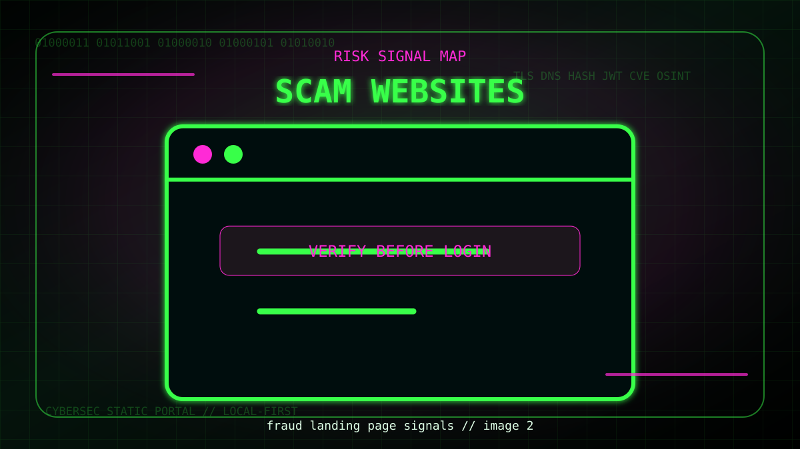
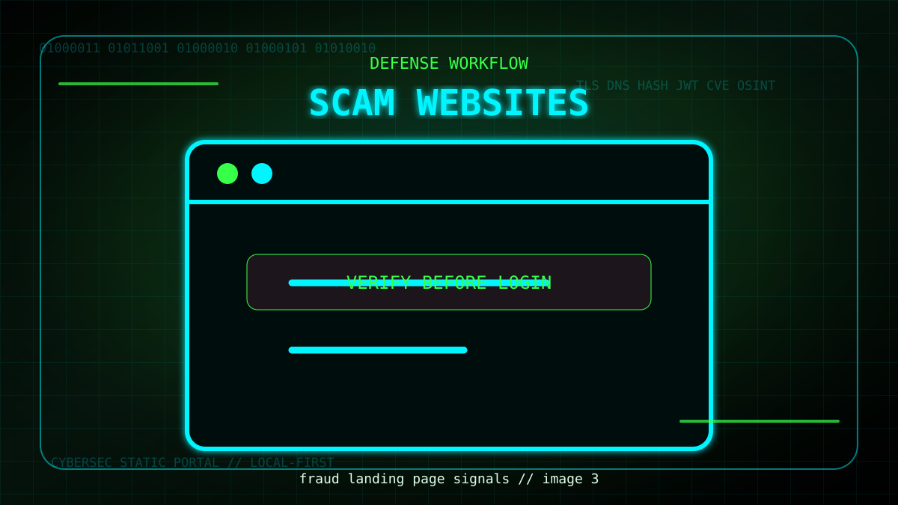

Контекст і модель ризику
У цій інструкції тема «Як розпізнати scam-сайт» розглядається як практичний процес. Спочатку визначте, що саме перевіряєте, які дані можна використовувати безпечно і який результат буде достатнім для рішення.
Професійний підхід складається з повторюваних кроків: зібрати вхідні дані, перевірити базові сигнали, порівняти їх з контекстом і лише потім робити висновок. Це зменшує ризик випадкових помилок.

Схема сигналів, які варто перевірити під час аналізу
Покрокова перевірка
- Визначте мету перевірки і не змішуйте кілька задач в одну.
- Збережіть початкові дані: URL, заголовок, токен, хеш або час події.
- Перевіряйте сигнали окремо і позначайте рівень довіри до кожного.
- Завершіть рішенням: безпечно, підозріло або потребує додаткової перевірки.
Практичний приклад
Для навчання використовуйте тестові значення. Реальні паролі, приватні ключі, персональні дані, production-токени та внутрішні URL не варто вставляти в публічні сервіси або випадкові приклади.
red_flags = ["new domain", "too cheap", "no legal contacts", "forced urgency"]Приклад показує навчальну логіку перевірки. Використовуйте його як ідею для лабораторної практики, а не як готовий production-код.

Приклад робочого процесу для навчальної перевірки
Висновок
У фіналі корисно записати короткий висновок: що знайдено, чому це важливо, який ризик створює проблема і який наступний крок варто виконати. Так технічний аналіз стає дією.